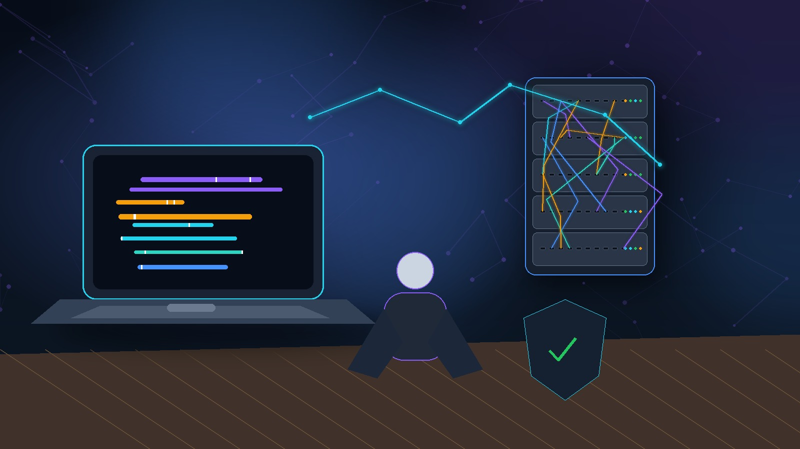
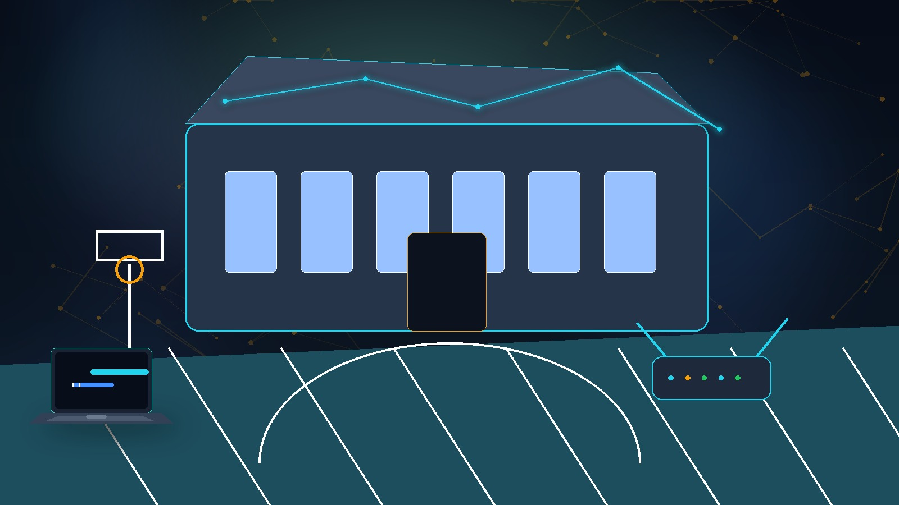
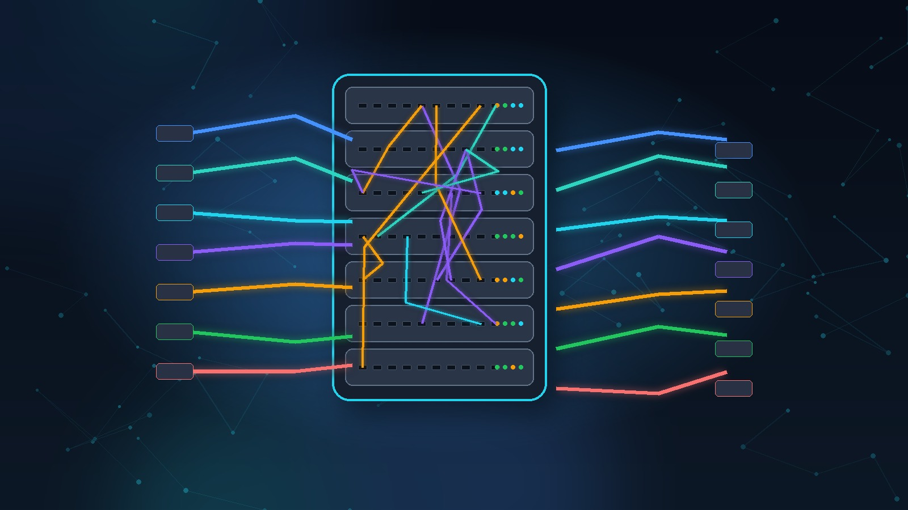
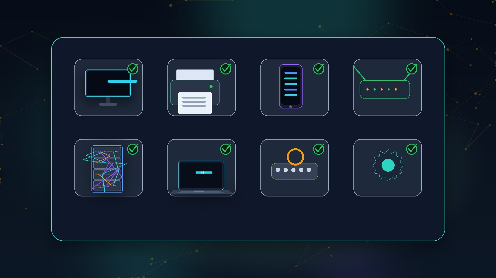
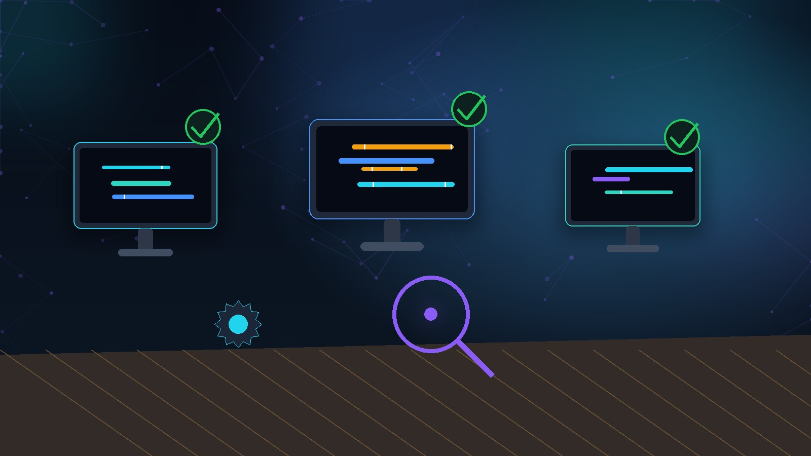
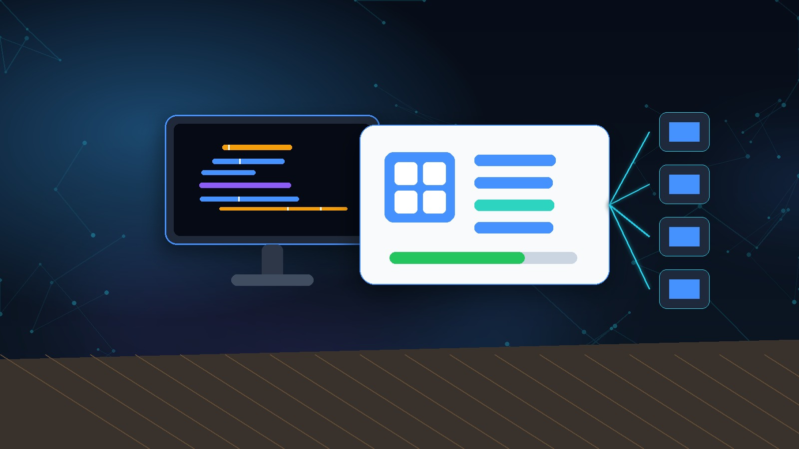
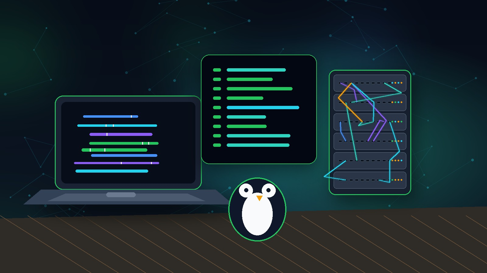
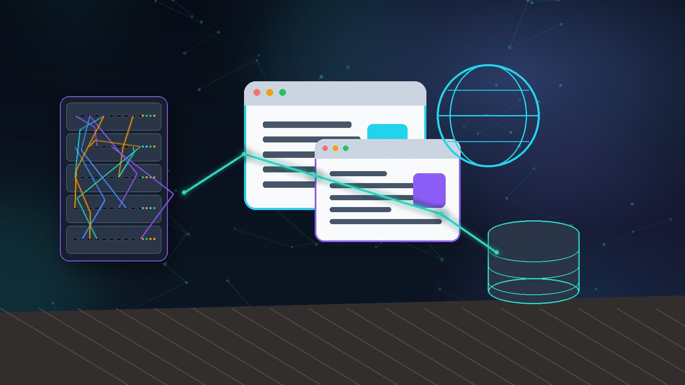
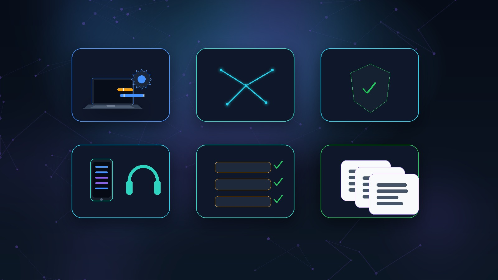
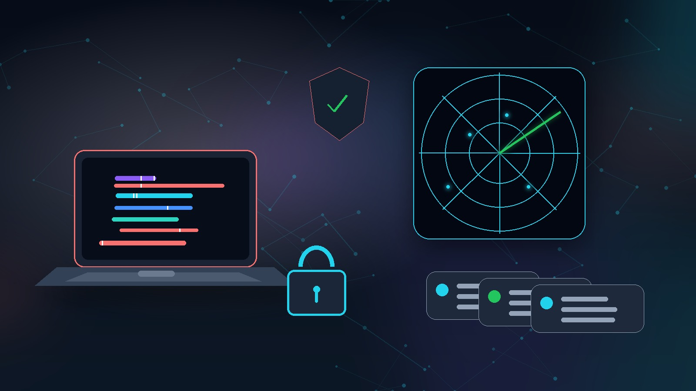

Hamed Naar
role = "Étudiant en BTS SIO option SISR"
Administration système, gestion des réseaux, support utilisateur, cybersécurité et maintenance informatique. Ce portfolio présente mon parcours, mes compétences et mes projets réalisés en formation et en milieu professionnel.

À propos de moi
Je suis étudiant en BTS SIO option SISR. Cette formation me permet d'apprendre à installer, configurer, maintenir et sécuriser des infrastructures informatiques.
- Déploiement Windows & Linux
- Installation MediaWiki
- Diagnostic réseau
- Inventaire de matériel
- Assistance utilisateur
Mon objectif est de devenir technicien systèmes et réseaux, technicien support ou administrateur systèmes et réseaux junior.
BTS SIO option SISR
Le BTS SIO, Services Informatiques aux Organisations, forme des techniciens capables de répondre aux besoins informatiques des organisations.
Option SLAM
Développement d'applications, programmation et bases de données.
Option SISR MON CHOIX
Administration des systèmes, gestion des réseaux, sécurité informatique et support utilisateur.
Mairie de Massy / Gymnases municipaux
Dans le cadre de mon expérience professionnelle, j'ai travaillé en lien avec la mairie de Massy sur des missions liées aux infrastructures informatiques de certains gymnases municipaux.
Cette expérience m'a permis de faire le lien entre ma formation BTS SIO SISR et un contexte professionnel réel.

Missions réalisées en contexte professionnel
Certains gymnases disposent d'une baie informatique centralisant les connexions réseau : switchs, panneaux de brassage, câbles RJ45 et équipements opérateur.

- Identification des câbles réseau
- Vérification des branchements switchs ↔ panneau
- Repérage des prises réseau par zone
- Vérification de l'état du câblage
- Signalement des anomalies visibles
- Identifier les équipements réseau
- Comprendre le brassage réseau
- Vérifier la connectivité physique
- Participer à la maintenance réseau
Mission qui m'a permis de comprendre le fonctionnement physique d'un réseau local et l'importance d'un câblage propre et d'une baie organisée.
Problèmes de connexion rencontrés par les utilisateurs : accès instable, poste non connecté, téléphone IP non fonctionnel, imprimante inaccessible.
- Vérification des branchements poste
- Contrôle câble RJ45 et prise réseau
- Vérification adresse IP via
ipconfig - Test connectivité via
ping - Vérification port dans la baie
- Diagnostiquer un problème réseau
- Vérifier une configuration IP
- Tester la connectivité
- Identifier une panne matérielle
- Assister les utilisateurs
Un problème réseau peut venir de plusieurs éléments : le poste, le câble, la prise murale, le switch, le brassage ou la configuration IP.
Recenser le matériel informatique des gymnases (postes, écrans, imprimantes, téléphones, périphériques, équipements réseau) afin de faciliter le suivi du parc.

- Identification des postes informatiques
- Recensement des périphériques
- Vérification état général du matériel
- Renseignement : type, emplacement, état
- Signalement du matériel défectueux
- Gérer le patrimoine informatique
- Réaliser un inventaire matériel
- Organiser les informations techniques
- Préparer les futures interventions
L'inventaire permet de savoir quel matériel est utilisé, où il se trouve et dans quel état il est — base essentielle de la gestion de parc.
Les agents rencontrent des problèmes informatiques quotidiens : ordinateur lent, problème d'impression, accès réseau, mot de passe, logiciel bloqué, document introuvable.
- Écoute et analyse de la demande
- Vérification des branchements
- Redémarrage du poste si nécessaire
- Vérification réseau et imprimante
- Remontée au service informatique
- Répondre aux incidents N1
- Accompagner les utilisateurs
- Analyser une demande
- Communiquer avec un service IT
Le support informatique demande de la méthode, de la patience et une bonne communication avec les utilisateurs.
Vérifier l'état général des postes des gymnases et signaler les anomalies pour maintenir le parc fonctionnel et sécurisé.

- Vérification du démarrage des postes
- Contrôle de la connexion réseau
- Vérification des périphériques
- Observation des lenteurs ou erreurs
- Signalement des anomalies
- Maintenir un poste informatique
- Identifier une anomalie
- Maintenance préventive
- Documenter une intervention
La maintenance préventive permet d'éviter certains incidents et d'améliorer le confort des utilisateurs.
Projets réalisés en BTS SIO SISR
Installation et configuration d'un poste Windows dans un environnement professionnel, réalisé sur machine virtuelle.
- Installation Windows sur VM
- Configuration réseau
- Création de comptes utilisateurs
- Vérification des mises à jour
- Documentation des étapes
- Installer un OS Windows
- Configurer un poste
- Gérer des utilisateurs
- Rédiger une doc technique

Meilleure compréhension du fonctionnement d'un poste Windows dans un environnement professionnel.
Installation et configuration d'un système Linux en ligne de commande. Découverte de l'administration système.
- Installation distribution Linux
- Configuration réseau en CLI
- Création utilisateurs et droits
- Commandes de base Linux
- Terminal et commandes Linux
- Gestion des utilisateurs
- Configuration réseau Linux
- Documentation procédure

Découverte de l'administration système sous Linux et acquisition des bases de la ligne de commande.
Installation d'un serveur MediaWiki sur Linux avec Apache, PHP et MySQL — déploiement d'un service web applicatif complet.
- Installation Apache, PHP, MySQL
- Déploiement MediaWiki
- Configuration base de données
- Configuration serveur web
- Tests de fonctionnement
- Service web Linux (Apache)
- Administration MySQL
- Déploiement applicatif
- Documentation installation

Compréhension du fonctionnement d'un serveur web et mise en place de services applicatifs sous Linux.
Compétences techniques

- Installation et configuration Windows
- Installation et configuration Linux
- Création et gestion d'utilisateurs
- Gestion des mises à jour
- Virtualisation (VirtualBox / VMware)
- Diagnostic réseau (ipconfig, ping)
- Configuration TCP/IP
- Câblage et brassage RJ45
- Identification des équipements réseau
- Baies informatiques et switchs
- Notions de base en sécurité IT
- Gestion des accès et des droits
- Veille sur les menaces
- Sécurisation des équipements
- Assistance de premier niveau (N1)
- Diagnostic de pannes matérielles
- Résolution d'incidents courants
- Escalade niveau 2
- Communication avec les utilisateurs
- Inventaire du matériel
- Suivi de l'état des équipements
- Maintenance préventive
- Documentation des interventions
- Rédaction de procédures techniques
- Comptes-rendus d'intervention
- Schémas réseau simples
- Fiches d'inventaire matériel
Veille technologique
Veille régulière sur les sujets liés à l'infrastructure, au réseau et à la cybersécurité.

Me contacter
Je recherche une opportunité en tant que technicien systèmes et réseaux, technicien support ou administrateur réseaux junior.